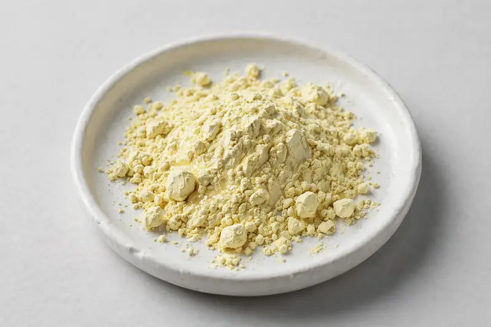

Evening primrose — GLA botanical for women's wellness formulations.

Overview
Evening primrose extract is derived from the seeds of Oenothera biennis and is valued by formulators for its gamma-linolenic acid content. Buyers in the supplement space frequently request oil-content grades for softgel and capsule applications positioned around women's wellness. As a Xi'an-based trading company, we source through vetted partner producers and confirm feasibility against your target specification before proceeding.
Specifications below reflect commonly requested options in the market — not a stock list. Share your target spec and we'll confirm exactly what we can supply, honestly.
| Specification | Details |
|---|---|
| Botanical identity | Evening primrose seed extract powder |
| Marker compound | Commonly requested spec grades: GLA (gamma-linolenic acid) oil-content grades; assay and test method agreed per buyer specification |
| Appearance | Light yellow to pale cream fine powder |
| Mesh size | Typically 80–100 mesh (confirm per inquiry) |
| Testing | COA/TDS arranged on request; scope agreed per your spec |
Applications
Documentation
We don't claim in-house labs or certifications we don't hold. COA and TDS documents can be arranged on request, and testing scope is agreed against your specification before supply.
FAQ
Related products
Oenothera biennis
Key marker: GLA
View specs →Theobroma cacao
Key marker: Theobromine 10-20%
View specs →Codonopsis pilosula
Key marker: 10:1 or polysaccharides
View specs →Rehmannia glutinosa
Key marker: 10:1 or catalpol
View specs →Dioscorea villosa
Key marker: Diosgenin Content
View specs →Bambusa arundinacea
Key marker: Silica Content
View specs →Send your target spec and volumes — we'll respond with a tailored quotation.
Request a Quote